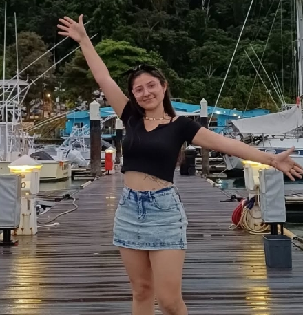

Referencias

María González (Visitante local de Tamarindo)
“Mi estadía en HOSPEDAJE EN TAMARINDO fue simplemente maravillosa. La casa que alquilé tenía vistas impresionantes al océano y una piscina privada que hizo que mis vacaciones fueran aún más relajantes. El servicio fue excepcional y el ambiente, cálido y acogedor. Definitivamente volveré cada vez que visite Costa Rica.”
Carlos Martínez (Turista en Costa Rica)
“HOSPEDAJE EN TAMARINDO superó todas mis expectativas. La villa que alquilé estaba a pocos pasos de la playa, y la tranquilidad que ofrece la zona es incomparable. El equipo de servicio siempre estuvo disponible para ayudarme con actividades locales y recomendaciones de restaurantes. Fue una experiencia fantástica.”
Ricardo Fernández (Turista en Costa Rica)
“Estuve con mi familia en una de las casas de HOSPEDAJE EN TAMARINDO, y nos encantó. La casa era moderna y perfectamente equipada, y las vistas al océano eran impresionantes. La piscina privada fue perfecta para relajarnos después de un día de actividades en la playa. ¡Un lugar perfecto para unas vacaciones en Costa Rica!”

Andrea Pérez (Turista en Costa Rica)
“Nuestra experiencia en HOSPEDAJE EN TAMARINDO fue excepcional. La villa que elegimos estaba increíblemente bien ubicada, con acceso directo a la playa. Nos sentimos muy cómodos, y el servicio de atención al cliente fue inmejorable. ¡Sin duda lo recomendaría a cualquier pareja buscando una escapada romántica!”
Laura Hernández (Cliente habitual en Costa Rica)
“Como visitante frecuente de Tamarindo, siempre elijo HOSPEDAJE EN TAMARINDO por la calidad y comodidad de sus casas. La ubicación es inmejorable, la piscina privada es ideal para relajarse, y la atención personalizada siempre hace que mi estadía sea más que placentera. ¡Recomiendo este lugar a todos los que buscan unas vacaciones inolvidables!”
Ana Rodríguez (Residente habitual en Costa Rica)
“Como residente local, siempre busco lo mejor para mis visitas a Tamarindo, y HOSPEDAJE EN TAMARINDO nunca me ha decepcionado. Las villas son hermosas, con vistas espectaculares al mar y espacios ideales para disfrutar en familia. La atención al detalle y el servicio constante son lo que me mantiene regresando.”

Carlos Méndez (Cliente frecuente en Costa Rica)
“He visitado Tamarindo varias veces y siempre me hospedo en HOSPEDAJE EN TAMARINDO. La comodidad de las casas, la proximidad a la playa y el servicio excepcional hacen que cada viaje sea más que memorable. Además, el equipo siempre está dispuesto a ayudar con recomendaciones sobre actividades locales.”
María González (Residente y cliente recurrente en Costa Rica)
“Siempre elijo HOSPEDAJE EN TAMARINDO para mis vacaciones en Costa Rica. Las casas tienen todo lo necesario para sentirte como en casa, y la ubicación cerca de la playa es perfecta. El personal es muy amable y siempre dispuesto a asegurarse de que todo salga bien.”

David Pérez (Visitante frecuente en Costa Rica)
“He estado en varios hospedajes en Tamarindo, pero HOSPEDAJE EN TAMARINDO es, por lejos, el mejor. La villa tenía todo lo necesario para unas vacaciones cómodas y sin estrés, y el acceso directo a la playa hizo nuestra experiencia aún más especial.”
Isabel Rodríguez (Cliente recurrente en Costa Rica)
“La calidad de los servicios en HOSPEDAJE EN TAMARINDO es incomparable. Las casas son espectaculares, con vistas espectaculares al océano y todos los servicios que puedas necesitar. Siempre que vengo a Tamarindo, sé que mi experiencia será de primera calidad.”
Javier Morales (Visitante asiduo en Costa Rica)
“Desde que descubrí HOSPEDAJE EN TAMARINDO, siempre regreso. Las casas son modernas y bien equipadas, y la atención al cliente es excelente. Es el lugar perfecto para escapar del estrés y disfrutar de la belleza de Tamarindo.”
Lucía Martínez (Cliente recurrente en Costa Rica)
“El servicio de HOSPEDAJE EN TAMARINDO es insuperable. Las casas son impecables, y el ambiente tranquilo hace que cada visita sea relajante. El equipo siempre está dispuesto a ayudar y recomendar actividades en la zona, lo que hace que nuestras vacaciones sean aún más especiales.”
Ricardo Fernández (Visitante local en Costa Rica)
“He hospedado varias veces en HOSPEDAJE EN TAMARINDO y siempre es una experiencia fantástica. Las villas están a solo unos pasos de la playa, y la atención al detalle en cada aspecto de la casa es impresionante. ¡Lo recomiendo sin dudarlo!”
Eduardo López (Visitante local en Costa Rica)
“Cada vez que visito Tamarindo, no dudo en elegir HOSPEDAJE EN TAMARINDO. Las villas son modernas y bien cuidadas, y la ubicación es ideal para disfrutar del mar y la tranquilidad de la zona.”
Paola María (Cliente frecuente en Costa Rica)
“Las vacaciones en HOSPEDAJE EN TAMARINDO siempre son un sueño hecho realidad. El alojamiento es de primera, las vistas al mar son impresionantes, y la atención al cliente siempre supera nuestras expectativas. ¡Nunca fallan!”